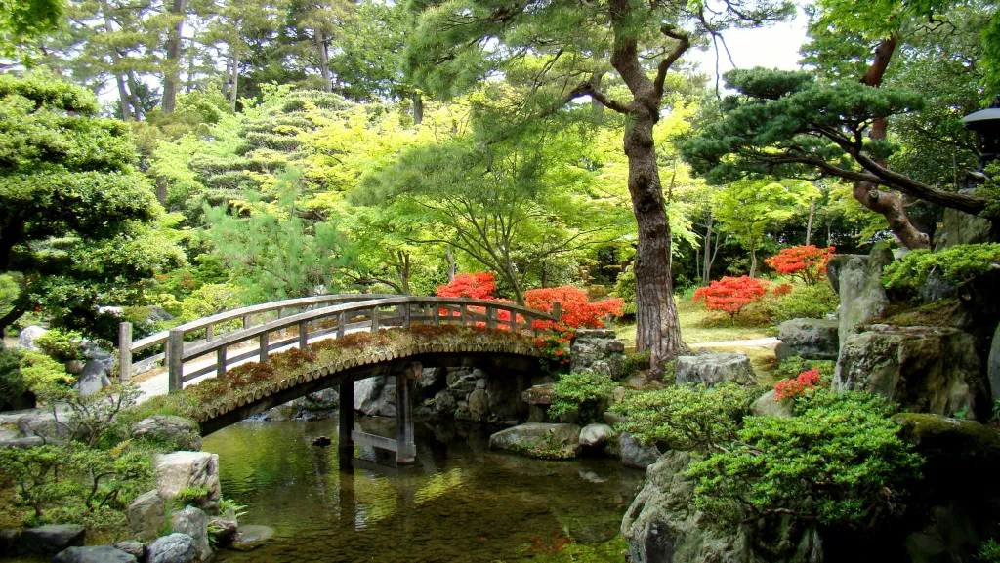

Imperial Palace East Gardens are historic public gardens in central Tokyo featuring the preserved foundations of Edo Castle, wide lawns, and seasonal scenery within the grounds of the Imperial Palace.